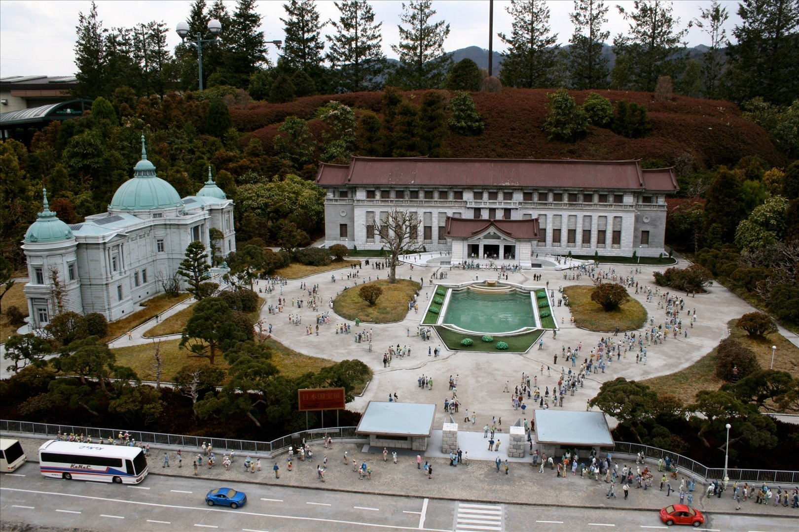

Tokyo
menu
Home
Places
Sites
Asakusa and the Seno-ji Temple
Ginza District
The Imperial Palace
The Kabuzi-ka Theatre
The Meiji Shrine
Miraikan and Edo-Tokyo Museums
The National Art Center
Tokyo National Museum
National Museum of Nature and Science
National Museum of Western Art
The Tokyo Skytree
Ueno Park and Zoo
About
FAQ
Contact
Welcome to Tokyo!
東京へようこそ！
Asakusa and the Seno-ji Temple
Ginza District
The Imperial Palace
The Kabuki-za Theatre
The Meiji Shrine
Miraikan and Edo-Tokyo Museums
The National Art Center

Tokyo National Museum
National Museum of Nature and Science
National Museum of Western Art
The Tokyo Skytree
Ueno Park and Zoo
Get in touch!
We'd love to hear from you, you attractive person you.
Contact Us